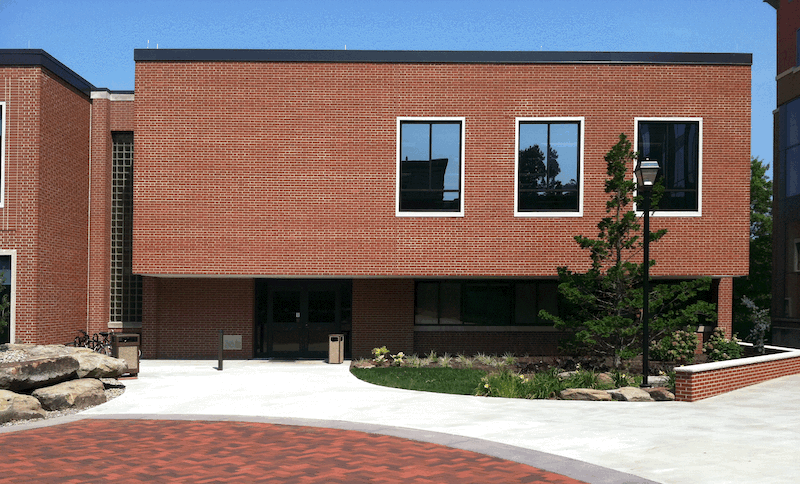

Mathematics
|
|
|
Department of Mathematics |
Tolerton & Hood Hall as it looked when built in 1983:

Tolerton & Hood Hall as it looked after remodeling in 2004:

Math department offices were located on the left side of this hallway:

The math department display case, next to one of the entrance doors to classroom TH 130:

The entrance to the Math Resource room:

The Math Resource room, as viewed from its door:

The Math Resource room, as viewed from the back of the room:

Name plates for math areas in Tolerton & Hood Hall: